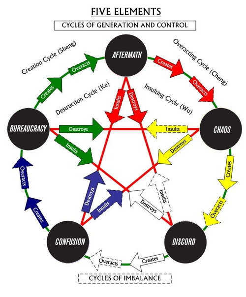

“The Daoists of ancient China developed some sophisticated Internal Alchemy to describe cycles of experience in terms of Yin (which I will will here take to correspond to Disorder) and Yang (which we will interpret as Order). We can map the seasons of chaos to the Wu Xing - quoting the wikipedia article - are "also known as the Five Elements, Five Phases, the Five Agents, the Five Movements, Five Processes, and the Five Steps/Stages”. Considering the erudition and ingenuity of Greg Hill and Kerry Thornley, I find it hard to dismiss offhand that this might have been intentional:
Earth = Yin/Yang Balance -><- Disorder/Order Balance = Chaos
Metal = Rising Yin -><- Rising Disorder = Discord
Water = Full Yin -><- Full Disorder = Confusion
Wood = Rising Yang -><- Rising Order = Bureaucracy
Fire = Full Yang -><- Full Order = Aftermath
Discordians often observe how the sequence of these are not always consistent with the traditional cycle outlined in the Principia Discordia. The Chinese developed several cycles using this system, and I illustrate by overlaying the seasons on the diagram from Wikipedia:
The Daoist Elemental Model is consisting of several cycles or relationships mapping the elements:
- Creating cycle: 生; shēng - One element promotes / supports the next (Parent begets Child).
- Destroying cycle: 剋; kè - One element controls / regulates the next (Grandparent controls Child).
- Overacting cycle: cheng - One element overwhelmed / overacts on the child (Parent overwhelms Child)
- Insulting cycle: 侮; wǔ (Reverse Ke) - One element insults / weakens the next (Grandchild insults Grandparent).
It seems like Creating and Destroying cycles are balancing or stabilizing forces (Anerisian?) and the the Overacting and Insulting cycles are unbalancing (Erisian?). The Creation and The Overacting cycle may be conceived as the Anerisian and Erisian aspects of the conventional cycle of the seasons. The Destroying and Insulting cycles are the Anerisian and Erisian regulatory counter cycles that balance them.
I am not entirely convinced any of this makes any sense, and more research needs to be done to corroborate or dismiss this. I thought it might regardless be an interesting starting point to play around with Discordian Alchemy.
Could there be a fifth cycle?“
- by Master Pipeweed of the Fractal Cult
On Duality and Gender
as a little tangent – sometimes it’s hard to reconcile modern progressive gender roles, etc, and these ancient passages which talk about the natural harmonious symmetry between male and female. It makes you wonder, were the ancients huge homophobes? Well they probably were but that’s not what they were writing about.
I don’t think the real message here is anything about sexuality or anything. I take it just to talk about generic harmonious opposites. It’s not saying men are naturally active and women are naturally passive or anything like that. I think it just means that the creative forces of the universe come from the gaps and cracks and, you know, vaginas – of what has already been created.
In that way, what exists and what does not are harmonious opposites. Their metaphorical genitals are irrelevant, they could both be butch lesbians for all we know, that’s not really the point. The point is that they have wild freaky sex all day erry day.
The Mysterious Spirit of the Valley (ERIS)
In the Tao Te Ching, chapter 6 is about the “mysterious valley goddess” who is the source of all things.
The valley spirit never dies;
It is the woman, primal mother.
Her gateway is the root of heaven and earth.
It is like a veil barely seen.
Use it; it will never fail.
I always wondered, why is the mysterious feminine a “valley goddess”? Are we, like, talking about, like, California girls? Is it just because the valley is a natural image?
I recently came across a strange translation which describes the “valley” as empty space. “All space is as empty as a valley.” That sounds very close to the Principia Discordia’s take on Primal Chaos, the formless void from whence all things arise. Chaos is the state of an idea before it’s happened, before it’s been pinned down and formed by thought and brought into the world.
So the Valley goddess is really like the goddess of potential energy, the ideas that can arise from the space between ideas.
This particular translation suggests that the emptiness is like a screen that we project a hologram (the world) onto. This pair (what exists, and what does not exist) are complimentary opposites.
If we take the mysterious figure in this passage to be Eris, it shows us that she is not a Goddess of the material world, or forms, of existence… rather, she’s the personification of what could be, what the world could become. She’s the space in which we have our good ideas. She’s the valley between the mountains of our lives into which we project our future.
So what do we mean by chaos anyway?
A gospel from Saint Amir.
Obviously, when we talk about chaos, we don’t mean the destructive, lawless state most people think of when you say chaos. That state of being is not chaos. It is defined by human decisions and expectations and actions. That state is the prophecy of bureaucrats and aristocrats afraid of losing what they have.
But this isn’t about them, or their prophecies.
This is about chaos.
Chaos gets compared to a physical condition called entropy often. Entropy is the tendency of the natural world to prefer simpler systems. Full disclosure, that’s a gross oversimplification, but it works for the purpose of this thought process.
So entropy is usually portrayed as a force of decay, of destruction. This is not the case. It has more to do with the spread of energy over an area, the preference to avoid peaks and valleys: local minima and maxima. It seeks equilibrium with the universe, to wax poetic.
This is not chaos.
Chaos, the way we talk about, it resembles potential energy more than entropy. It can take the form of havoc or decay, or it can be a thing of creation. It is not a thing. It is the potential for many things.
But even then potential energy is a symbol for chaos, a representation and nothing more. Just as the word is not the thing, just as the equation is not the electron, the perceived world is not the chaos.
In short, chaos is the reality, and all else is an imperfect symbol. And yet chaos is only a symbol for reality. (Waxing Platonic up in this piece)
So learn what you can from the chaos and the symbols and the reality, and don’t worry too much about the rest.
And I promise one of these days I will stop blowing smoke up your ass.